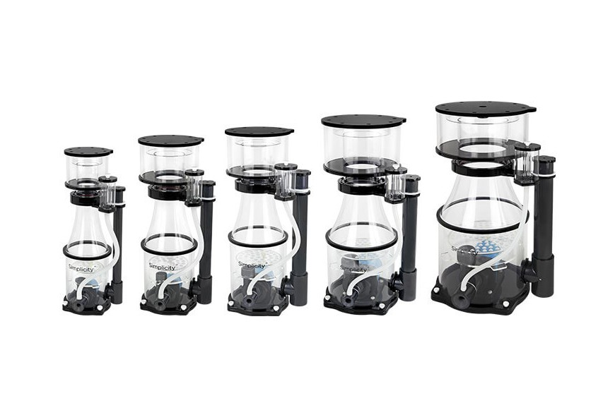
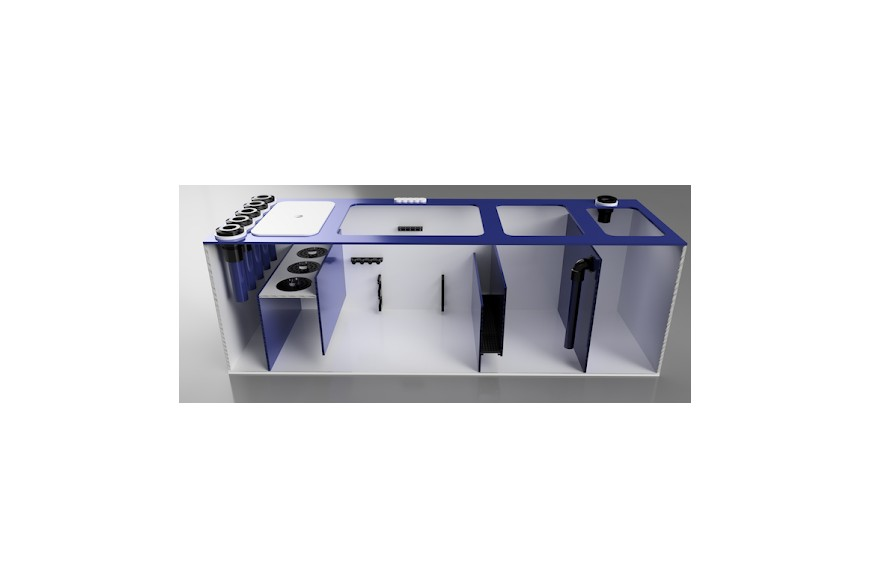
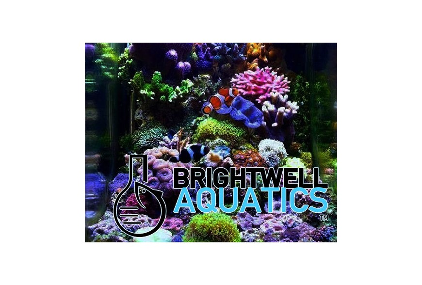
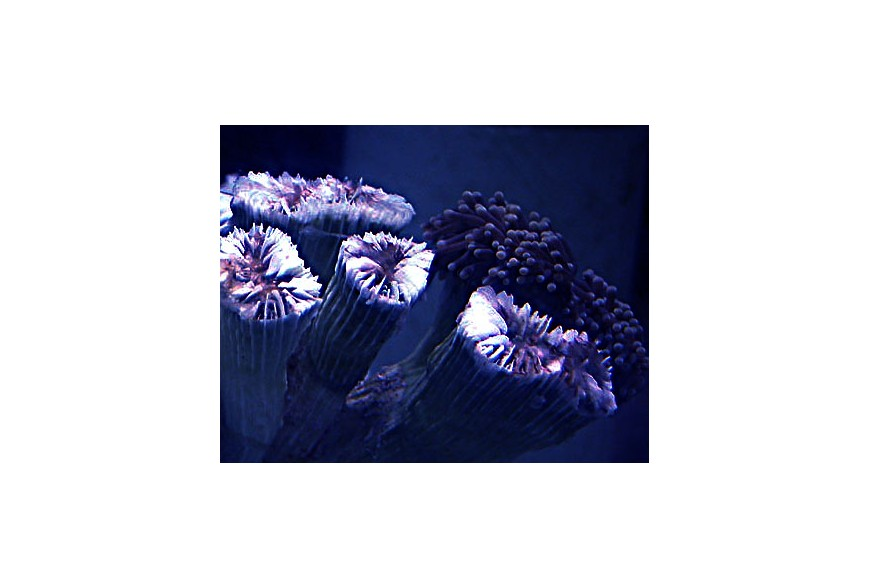
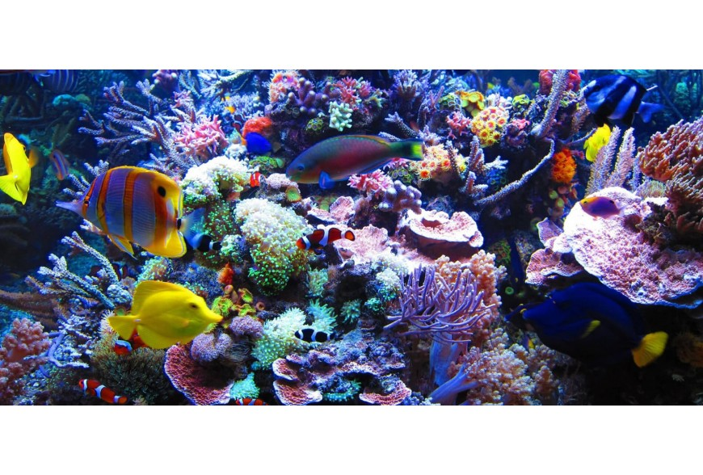
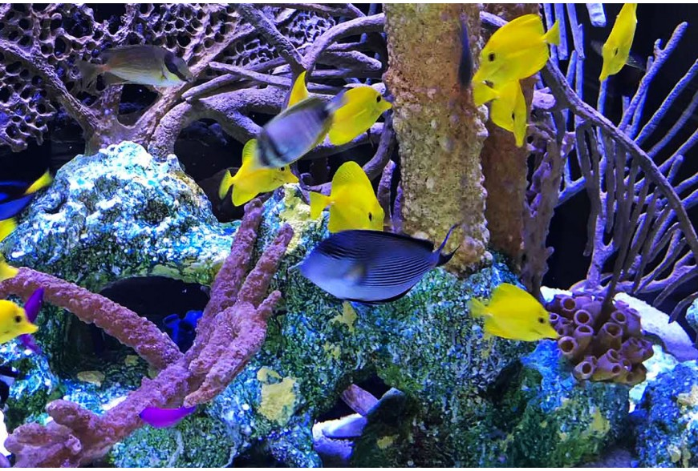

El Skimmer en la palestra
El mercado de los Skimmers está lleno de modelos, pero ¿cuántos de ellos merecen la pena? Hay muchas verdades que algunos no quieren que sepas, pero aquí te lo explicamos todo.
Leer más →Consejos, tutoriales y novedades sobre el mundo de la acuariofilia profesional

El mercado de los Skimmers está lleno de modelos, pero ¿cuántos de ellos merecen la pena? Hay muchas verdades que algunos no quieren que sepas, pero aquí te lo explicamos todo.
Leer más →
Primera parte de varios artículos sobre filtración, cómo montar tu acuario y cómo configurarlo. Entenderás por qué es tan importante la recirculación correcta.
Leer más →
Guía para poder controlar los parámetros de un acuario pequeño con sencillez utilizando la gama de productos Brightwell Aquatics.
Leer más →
Motivos básicos de por qué puede estar muriendo corales que en principio deberían ser fáciles de mantener. Aprende a identificar y solucionar los problemas más comunes.
Leer más →
¿Se puede transformar un acuario de agua dulce en marino? ¿Es recomendable? ¿Cómo hacerlo? Todas las respuestas a tus dudas.
Leer más →
En este post analizaremos cuáles son las rutinas diarias y semanales que debes seguir para tener un acuario limpio, saludable y sin problemas.
Leer más →